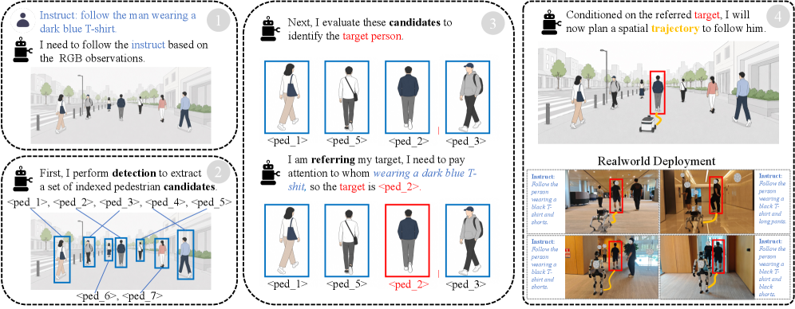
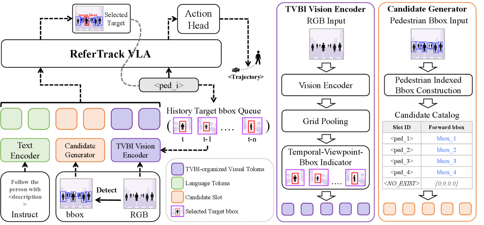
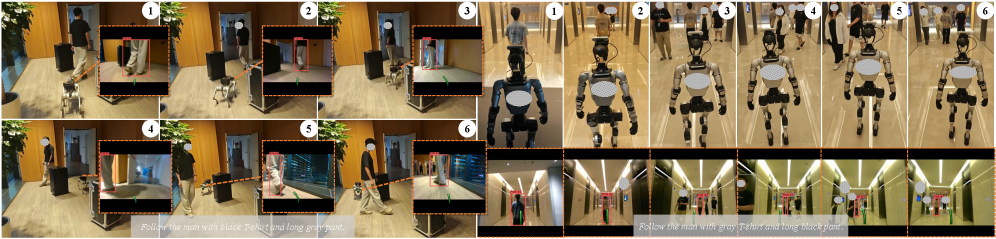
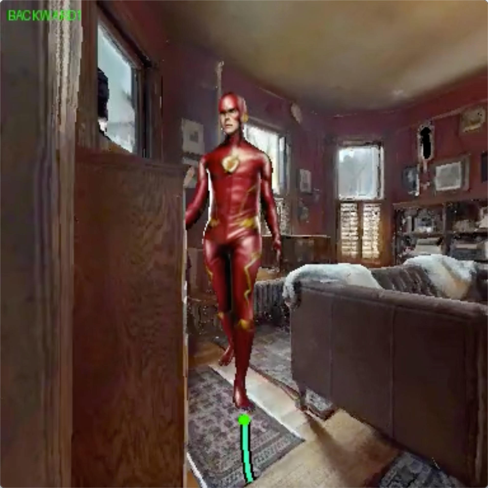
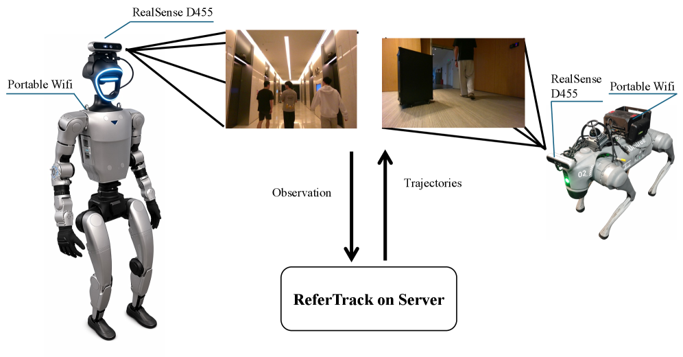

具身视觉跟踪（EVT）要求机器人仅靠机载摄像头持续跟踪自然语言描述的目标。现有VLA模型将目标识别和轨迹规划统一为单一策略，但其CoT推理往往在抽象的空间潜空间中运作，难以与显式的图像空间检测对齐。
ReferTrack提出了一种互补范式：先指认（referring），再跟踪（tracking）。 目标识别被转化为一个约束性的多项选择题：从当前视角检测到的边界框集合中选出正确的那个。这使得识别过程可监督、与VLM的视觉定位能力天然对齐。
ReferTrack建立在双分支架构之上。对于导航分支，前向观测历史经过SigLIP和DINOv2双编码器提取视觉特征，再通过TVBI（Temporal-Viewpoint-Bbox Indicator）Token注入时空结构。同时，当前帧的YOLO行人检测结果被组织为一个索引化的候选框目录，每个框由MLP投影器编码。
核心流程分两阶段：第一阶段，模型输出一个Refer-CoT Token从索引框目录中选择与指令匹配的目标框（或输出 ⟨NO_EXIST⟩ 表示目标不在视野内）。第二阶段，选中的目标框通过滑动窗口队列传播，TVBI Token将历史框的几何特征注入视觉流，最终解码出跟踪航点。
这种设计的关键优势在于：将目标识别从抽象的极坐标空间推理（如TrackVLA++ 的做法）转移到图像空间的显式框选择，直接对齐VLM的视觉定位机制，同时保留了端到端学习的简洁性。
与现有方法相比，ReferTrack的找拍框目录接口还有一个额外优势：它解锁了超出稀缺专家跟踪轨迹之外的监督来源。网络上存在大量的指代和定位数据，以及丰富的带2D行人标注的第三人称视频，这些都可以用来填充候选框目录，从而以可扩展的方式提升EVT驱动的VLA的指认能力。


ReferTrack的三个核心技术组件，分别解决指认、跟踪和数据三个关键瓶颈。其中Refer-CoT负责指出目标是谁，TVBI负责跟踪目标怎么动，Refer-QA负责让模型学会指认：
模型输出一个特殊的Refer-CoT Token，取值空间为 {⟨ped₁⟩, ..., ⟨ped_K⟩, ⟨NO_EXIST⟩}。这个Token直接从索引化的候选框目录中选择目标，将目标识别转化为一个约束性多项选择题。相比于在抽象空间坐标中推理，这种方式更易监督、与VLM的grounding能力天然对齐。⟨NO_EXIST⟩ 显式表示目标不在当前视野中，避免了模型在无目标时强行生成跟踪轨迹。
受NavFoM的TVI（Temporal-Viewpoint Indicator）Token启发，ReferTrack提出了TVBI Token。一旦目标被Refer-CoT Token选中，其历史边界框被放入一个滑动窗口队列，TVBI Token将这些框的几何特征注入到当前视觉编码流中。这使得模型能够感知目标的运动模式：走向、转向、速度变化：即使目标暂时被遮挡也能保持跟踪。Ablation显示TVBI贡献了 +6.5 SR的提升。
在线跟踪的指认数据稀缺且昂贵。为此，ReferTrack从行人ReID数据集构建了一个Refer-QA数据集，使用相同的索引框目录接口：给定一张行人图像和一段描述，模型选择对应的索引框。这种离线指认训练与在线跟踪协同进行，使模型在不依赖大量闭环导航数据的情况下学会鲁棒的指认能力。Ablation显示Refer-QA贡献了 +5.0 SR的提升。
在EVT-Bench的single forward-view设置下，ReferTrack使用Qwen3-4B作为LLM骨干、1.3M导航样本（仅SFT，无RL），在三个核心任务上均取得最优：
Single-Target Tracking（STT）： SR 89.4%，TR 92.5%，CR 1.6%：证明指认接口不损害标准跟踪稳定性。
Distracted Tracking（DT）： SR 73.3%，TR 81.8%：相比最强单视图基线TrackVLA++ 提升 +6.8 SR和 +13.0 TR。
Ambiguity Tracking（AT）： SR 74.1%，TR 85.7%：相比TrackVLA++ 提升 +22.9 SR和 +22.3 TR，甚至超越多个多摄像头基线。
结论三：指认>多视角：ReferTrack的单摄像头结果甚至在识别密集型任务上超越多个多摄像头基线，说明当目标判别是主要瓶颈时，显式的图像空间指认可以比增加摄像头覆盖更有效。同时，这些收益并非以牺牲标准跟踪稳定性为代价：ReferTrack在STT上同样取得了最优结果。
Ablation进一步验证了三个组件的贡献：完整ReferTrack相比无Refer-CoT的变体提升 +13.7 SR，移除TVBI退步 -6.5 SR，移除Refer-QA退步 -5.0 SR。这三个组件协同工作，共同构成了核心性能提升的来源。


ReferTrack在四足机器人和人形机器人上进行了真实世界部署验证。实验表明，模型能够将从仿真中学习的指认-跟踪能力直接迁移到现实场景，在拥挤环境中稳定跟踪指定行人。这表明显式的图像空间指认策略不仅提升了仿真环境中的性能，也有助于缩小sim-to-real差距。

参考：https://arxiv.org/abs/2607.20061